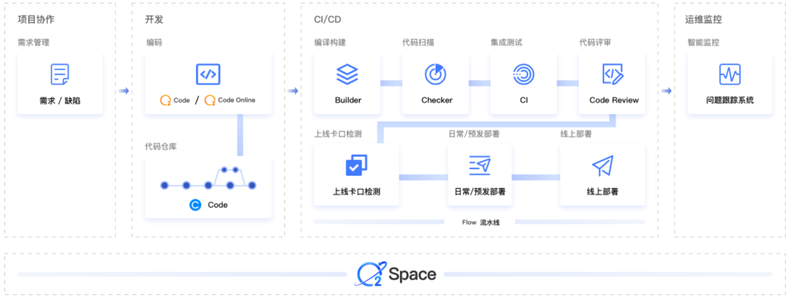

Essay
本文最后更新于：2023年12月4日 晚上
因为 React 你忘记了（或者从来不知道）的事情
2023/08/23
- React 导致很多东西只有围绕 React 构建才能够在其中使用，但这是不对的
Hook不再是优势，而是基线- 现代框架已经足够聪明，不再需要微观管理渲染(useMemo,useCallback,useEffect)
- 服务端渲染不再特别。SvelteKit,Nuxt,Fresh,SolidStart(Solid 的元框架)也加入了游戏
- 双向数据绑定并不难，也不是一个坏主意
- Css 在其他框架中使用起来比 React 简单多了
- 如果你已经学了 React,其他框架学起来只会更简单
- React 老生常谈的性能问题
最后是作者推荐的其他框架：
- Svelte
- Vue
- Solid
- Fresh
- Astro
- Preact
OpenTiny 前端组件库正式开源啦！面向未来，为开发者而生
2023/08/27
这是一款适配多端的企业级组件库，支持 Vue2/Vue3/Angular 等技术栈，并提供了主题配置系统、中后台模板和 CLI 命令行等工具
- 支持 vue2 和 vue3
- 一套代码支持 PC 和移动端
- 提供 Angular 组件库
2023 年大淘宝 Web 端技术概览
2023/08/28
挑几个感兴趣的写一下
一、O2Space
一站式 Web 研发交付平台，能力包括应用管理、变更及迭代发布操作、代码构建与静态扫描等。

估计没开源，网上没找到、
二、O2code
基于开源框架：OpenSumi 深度定制的 IDE，集合大量阿里巴巴前端基础设施
三、ICE
ICE 是一个开箱即用的终端应用研发体系，包含应用框架 (ice.js)、包开发 (ICE PKG)、微前端 (ICESTARK)、调试工具 (AppDevTools)、API 体系等。
ice.js应用框架是整个体系的核心，它致力于提供开箱即用的框架能力，基于社区流行的 React 渲染，迄今已发布了两个大版本，并广泛服务于阿里内部和社区用户。内置工程配置、状态管理、数据请求、权限管理等最佳实践，让开发者可以更加专注于业务逻辑。同时面向不同场景沉淀了多种解决方案，包括但不限于多端小程序、中后台应用、Weex 2.0 应用、搭建等。ICE PKG是面向 NPM 包开发的解决方案，提供 React 组件、Rax 组件、Node 模块、前端类库 等多场景 NPM 包的研发，提供标准的文档预览和打包能力，同时在大淘宝技术通过定义组件标准，打通搭建模块与源码组件的差异。ICESTARK是面向大型 Web 应用的微前端解决方案，提供巨型应用的管理最佳实践。通过微应用的研发，解决多个开发团队协同问题，还带来了安全的沙箱、优秀的性能体验。UNI API是面向跨多终端/容器的统一 API 体系，它致力于提供前端统一的跨容器（引擎）以及 Native 的桥通道能力。AppDevTools是面向客户端本地调试的开发者工具，它致力于解决集团内 Web 技术栈开发者在 App 中无法调试，定位问题难，度量性能难的问题。
Astro 3.0 重磅来袭
2023/09/05
Astro是集多功能于一体的 Web 框架，用于构建快速、以内容为中心的网站。
主要是被 3.0 宣传的 View Transitions API 给吸引去了解一下这种框架
他的特点主要是：
- 组件群岛：
每一个页面可以由多个不同的框架组件组成，不管是 Vue 还是 React，Preact，Svelte - 功能齐全且了灵活:
Astro 是集多功能于一体的 Web 框架，提供了构建网站所需的一切 Astro 包括组件语法、基于文件的路由、静态资源处理、构建处理、捆绑、优化、数据获取等。你只使用 Astro 核心功能集就可构建出色的网站。 - 服务器优先：
Astro 尽可能利用服务器渲染而不是客户端渲染。 - MPA：
和 SPA(单页面渲染)不同，Astro 是多页面应用
The TSConfig Cheat Sheet
2023/09/22
项目来不及做完了啊啊啊啊啊啊
这是一个懒人 tsconfig.json 文件
1 | |
具体内容的分析可以直接到原作者博客上去看
7 simple habits of the top 1% of engineers
2023/09/27
前 1%工程师的 7 个简单习惯
- 成为一名工程师，而不应该是编码员
- 为人类而不是计算机编写代码
- 和代码本身分离
- 使用一致的标准
- 编写简单的代码
- 不要发生预测以外的事情
- 经常沟通
- 快速编码…而且速度慢
- 不要盲目循规蹈矩
Polyfill 变得流氓
2023/09/27
首先什么是 Polyfill,
Polyfill 是一个填充物，类似于 Babel(转译器)
Babel 能够为旧的浏览器不支持的新的语法进行转译从而能够在旧浏览器上跑通
但是如果遇到一个新的函数方法，并不能通过转译来实现,所以就需要用到 Polyfill 来进行对新函数的实现，从而在不支持的旧浏览器上使用
但是这篇文章讲的是 Polyfill 的滥用
在如今随便一个包越来越多的依赖下,每一个依赖都填充了 Polyfill,导致 Polyfill 的过多，而且在这些包中，Polyfill 似乎都是直接被调用而不是在需要的时候调用
其中 eslint 生态系统受到的影响最大
按需载入 Polyfill js 使用的是 babel 的@babel/preset-env 插件
1 | |
css 使用 postcss 的 postcss-preset-env 来做按需 prefix
设计模式
2023/10/11
什么是一个网页，或者说一个 app 的设计模式，就是做出更符合用户的视图和功能，提高用户的体验和上手感
这是一篇来自 ANTD 的体验设计师的对一些设计模式的总结，可惜好像停止更新了
如何花两年时间去面试一个人
2023/10/16
文章中提到，如今招聘压力变大的当下，其实雇主也越来越难找到真正的优秀的人
他提到，与其在简历上写精通 xxx，熟悉 yyy，掌握 zzz这些毫无意义的东西，不如去列一个自己看过的书的清单
微软高级开发工程师熊力就说过：“我当年毕业的时候总结了一个公式：第一份工作的月薪=大学四年买过的技术书籍价格的总和。”
而书本只是基础知识，实战能力又在哪里能体现呢？ Github
从你的 GitHub 旅程开始，你就已经一脚踏进了真正的企业，而企业的面试也已经开始。
Visual Copilot 简介：更好的从 Figma 到代码的工作流程
2023/10/16
这篇文章介绍了 Visual Copilot，一个全新的 Figma-to-code 插件，旨在节省开发者将 Figma 设计转换为代码所需的 50-80% 的时间。
2024 的 React 生态
2023/10/26
React Ecosystem in 2024
随着 React 在 2024 年庆祝成立 11 周年，值得期待的是 React 生态系统中令人兴奋的发展。在这篇博客中，我们将探讨生态系统的各个方面，以 2023 年发生的事情以及您在来年可以期待的事情为基础。
挑几个还没学的常用的
- 路由
- 状态管理
- 网络请求
- 测试
- Styling
- UI
- Animation
- 数据可视化
how-engineering-communicates
2023/10/26
前半篇文章讲述了一个工程该如何沟通：
- 首先是异步
- 把事情写下来
- 使工作可见
- 真实坦诚过度的沟通
- 注重培养维护文档的文化
- 记得使用表情
后半篇文章讲述了如何有效沟通
新版 React 文档中的九项最佳建议
2023/11/03
1.为循环中的元素选择键时，请使用对同一条目始终相同的标识符，而不是数组索引
1 | |
2.定义组件时，应将其定义在文件/模块的顶层，而不是嵌套在其他组件或函数中
1 | |
3.决定在状态中存储什么内容时，存储可用于计算所需内容的最小表示形式
1 | |
4.在考虑是否使用 useMemo、useCallback 或 React.memo 进行缓存时，请推迟缓存，直到发现性能问题。
1 | |
- 关于 use 前缀
1 | |
6.当您需要根据道具变化调整状态时，请直接在组件函数中设置状态（在渲染过程中），而不是在效果中设置状态
1 | |
7.当您需要获取数据时，请使用库而非使用效果
1 | |
8.当需要对发生的事件做出响应时，应在事件处理程序中编写代码，而不是在 useEffect 中编写代码。
1 | |
9.当一个 useEffect 依赖关系导致了你不希望看到的重读（包括无限循环）时，不要只从数组中移除依赖关系：也要从效果函数中移除依赖关系
经验如何塑造顶尖工程师
2023/11/03
成为一名优秀的工程师需要不断积累经验。每个项目，哪怕是小项目，都是为你的工具箱添加新技术和工具的机会。当你能将在一个项目中学到的技术与在另一个项目中学到的工具相结合，从而解决问题时，这将带来更大的价值。这一切都会让你受益匪浅。
把你的工程技能想象成工具箱
匹配你的技术和工具
保持敏捷性和适应性
积累宝贵经验的实用技巧
一个设计网站
2023/11/15
Godly：设计灵感寻找网站
当你没有好的设计灵感的时候，可以看看这个网站「Godly」，提供了大量的现代的产品设计效果，点击到详情页面可以看到具体的效果以及对应的详细说明，做得非常精致，很推荐
Tw93 大佬在重庆前端交流会上的发言
2023/11/15
前端发展的困境：“卷”，“迷茫”，“天花板”，“人才挤挤”，“行情不太好”
前端的破局：
- 快乐地写代码比其他事更重要
- 作为一个工程师要明白自己在做什么
理清楚->讲明白->做明白 - 不做传统工程师，去做产品工程师
- 做一个给业务帮忙的前端
- 提升自己的工程师实力
你为什么要选择 React Query
2023/11/16
有中文译文但是我更推荐看看原文
本文讲到了几个关于 useEffect 中获取数据遇到的问题
- 有的时候网络请求返回的数据顺序和你发送的顺序不一样
- 你可能需要单独一个状态用来保存 loading
- 用一个空数组[]来保存初始态，你可能会疑惑到底是初始还是根本就没有数据
- 你得手动处理 error，fetch 不会抛出错误
- 每次请求成功或者失败，你都得手动处理 error 和 loading 的状态
要解决以上这些问题，代码就会变成 spaghetti code 🍝，所以你需要 React Query(或者 swr 更简单)
67 个奇怪的浏览器调试方法
67 Weird Debugging Tricks Your Browser Doesn’t Want You to Know
2023/11/20
这篇文章介绍了如何最大化利用浏览器的调试器。具体操作包括使用高级条件断点、Logpoints / Tracepoints， 使用看板中的 console.log，追踪调用堆栈，改变程序行为，快速而简单的性能评估，使用函数元的方式，基于样本和 CSS 的断点等。此外，还可以自动为一个类的每个实例分配唯一的 ID，使用全局布尔值来控制一个或多个条件断点，监控类调用，调用并调试函数，暂停执行 URL 更改，调试属性读取，使用 copy () 将复杂信息直接复制到剪贴板，调试 HTML/CSS。
快过年咯
如何快速的编码
2023/12/04
How to code faster - VS Code edition
这篇文章介绍了快捷键以及一些方法来帮助我们快速编码，比如说快速的复制黏贴，善用搜索来导航，F2 的重命名以及正则表达式搜索等等
VsCode 的 debugger 和 Chrome 的 debugger
2023/12/04
Chrome 调试器比您想象的更易于使用
使用 Visual Studio Code 调试 React 应用
其实 Chrome 的调试器和 vscode 的调试器差不多，内容可以说几乎一模一样
文章中的视频值得一看，如果不想看的话文章中的内容就是对视频的总结